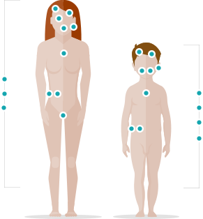

<div class="disease">
  <app-header></app-header>

  <div class="heading">
    <div class="heading__text">
      Anatómia chorôb
    </div>

    <div class="heading__substrate">
      #feelbetter
    </div>
  </div>

  <div class="disease__description">
    <p>
      <strong>Kliknite na časti tela</strong> a zistite, aké ochorenia vás a
                                              vaše deti
                                              ohrozujú.
    </p>

    <p>
      Akékoľkovek otázky týkajúce sa príslušného ochorenia
      alebo spôsobu jeho liečby je potrebnékonzultovaťs ošetrujúcim lekárom
      Kontakt pre prípad hlásenia nežiaducich účinkov: sk-safety@gsk.com
    </p>
  </div>

  <div class="disease__anatomy">
    <span class="disease-dot"
          [ngClass]="popover.isOpen()?'disease-dot--active':''"
          placement="right"
          ngbPopover="Postupne sa objavujú bolestivé kŕče celého tela, pri ktorých stúpa teplota. Pacient je pri plnom vedomí a príčinou smrti je väčšinou udusenie."
          popoverTitle="Tetanus"
          #popover="ngbPopover"
          #p="ngbPopover" (document:click)="p.close()" (click)="$event.stopPropagation()">
    </span>
    

  </div>

  <app-footer></app-footer>
</div>
